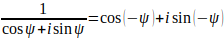

тригонометрическая форма
комплексного числа
Наряду с алгебраической формой комплексного числа широко применяется тригонометрическая форма.
Теорема 1.4. Для любых действительных чисел x и y, удовлетворяющих условию x 2 + y 2 = 1 (1), существует единственное действительное число φ такое, что x = cosφ, y = sinφ, 0 ≤ φ ≤ 2π (2).
Доказательство. Предположим, что действительные числа x и y удовлетворяют условию (1), тогда | x | ≤ 1 (3).
Любое действительное число, удовлетворяющее условию (3), принадлежит области значений функции cos в замкнутом интервале [0, π]. Следовательно, существует такое действительное число ψ, что x = cosψ, 0 ≤ ψ ≤ π (4)
В силу (1) и (4) y 2 = sin 2ψ и y = ± sinψ. Если y = sinψ, то положим φ = ψ. Если же y = - sinψ, то положим φ = 2π - ψ. В любом случае действительное число φ удовлетворяет условиям (2).
Предположим, что θ ‑ произвольное действительное число, удовлетворяющее условиям x = cosθ, y = sinθ, 0 ≤ θ ≤ 2π (5).
Допустим, что θ ≤ φ, тогда sin(φ - θ) = sinφcosθ - cosφsinθ = yx - xy = 0 .
Но 0 ≤ φ - θ < 2π, поэтому равенство sin(φ - θ) = 0 возможно лишь в случае φ - θ = 0 или φ - θ = π. Если φ - θ = π, то cosφ = - cosθ = - x = - cosφ, sinφ = - sinθ = - y = - sinφ; из равенства cosφ = - cosφ, sinφ = - sinφ следует cosφ = sinφ = 0, что невозможно. Таким образом, случай, когда φ = θ = π, невозможен. Следовательно, φ - θ = 0 и φ = θ.
Теорема 1.5. Для любого комплексного числа x, отличного от нуля, существует единственная пара действительных чисел r и φ такая, что z = r(cosφ + isinφ), 0 < r, 0 ≤ φ ≤ 2π (1).
Доказательство. Если r удовлетворяет условиям (1), то | z | 2 = r 2(cos 2φ + sin 2φ) = r 2 и r = | z |. Следовательно, существует не более одного действительного числа r, удовлетворяющего условиям (1).
Пусть z = a + bi ≠ 0, где a, b – действительные числа. Положим r = (a 2 + b 2) ½, r > 0. Тогда . В силу теоремы 1.4 существует единственное действительное число φ, удовлетворяющее условиям (2).
Так как r < 0 и , то из (2) следует z = r(cosφ + isinφ), 0 ≤ φ ≤ 2π (3).
С другой стороны, из (3) следуют равенства a + bi = rcosφ + rsinφ · i, a = rcosφ, b = rsinφ. Поэтому из условий (3) следуют условия (2). Таким образом, условия (2) и (3) при r > 0 равносильны. Следовательно, существует единственная пара действительных чисел, удовлетворяющих условиям (1).
Определение 1.6. Тригонометрической формой комплексного числа z называется его представление в виде z = r(cosφ + isinφ), где r и φ ‑ действительные числа и r ≥ 0.
Теорема 1.6. Пусть z = r(cosφ + isinφ), r > 0 (1), z = r1(cosφ + isinφ), r1 > 0 (2), ‑ два представления комплексного числа z в тригонометрической форме. Тогда r = r1 = | z | и существует такое целое число k, что φ - ψ = 2πk.
Доказательство. В теореме 1.5 установлено, что из (1) и (2) следуют соответственно равенства r = | z | и r1 = | z |, или r = r1 = | z |. Для пары чисел φ и 2π существуют действительное число α и целое число m такие, что φ = 2φm + α, 0 ≤ α < 2π (3).
Аналогично, для чисел ψ и 2π существуют действительное число β и целое число n такие, что ψ = 2πn + β, 0 ≤ β < 2π (4).
На основании формул (1), (3) имеем r = | z | и z = | z | (cosα + isinα) (5).
В силу формул (2), (4) получаем r1 = | z | и z = | z | (cosβ + isinβ) (6).
Поскольку | z | ≠ 0, из (5) и (6) следует, что cosα + isinα = cosβ + isinβ (7).
Так как 0 ≤ α, β < 2π, то, по теореме 1.5 , из (7) получаем α = β (8).
На основании (3), (4) и (8) заключаем, что φ - ψ = 2πk, где k = m - n.
Теорема 1.7. Пусть z = | z | (cosφ + isinφ), z1
= | z1 | (cosψ + isinψ), где φ и ψ –
действительные числа; тогда
1) zz1 = | z || z1 |[cos(φ + ψ) + isin(φ + ψ)];
2) при ;
3) zn = | z | n(cosnφ + isin nφ для любого натурального n;
4) (cosφ + isinφ)n = cosnφ + isin nφ.
Доказательство. В силу дистрибутивности умножения комплексных чисел относительно сложения имеем z · z1 = | z || z1 | [(cosφcosψ - sinφsinψ) + (cosφsinψ + cosψsinφ)i].
Отсюда следует формула (1), поскольку cosφcosψ - sinφsinψ = cos(φ + ψ); cosφsinψ + cosψsinφ = sin(φ + ψ)
В силу формулы (1) получаем (cosψ + isinψ)(cos(-ψ) + isin(-ψ)) = cos0 + isin0 = 1,
поэтому  и при
z1 ≠ 0 получим
Следовательно, по формуле (1),
Формула (3) доказывается индукцией по n на основании формулы (1). Формула (4) получается
из формулы (3) при | z | = 1.
Формулы (3) и (4) называются формулами Муавра.